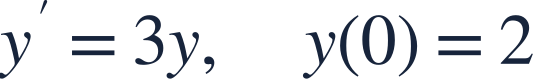
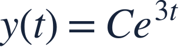
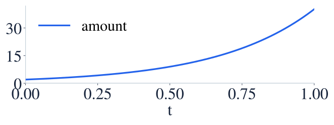
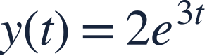
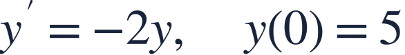

Exponential growth and decay
지수성장과 감소

A constant relative growth rate leads to an exponential model.
양에 비례하는 일정한 성장률은 지수 모형으로 이어집니다.

A constant relative growth rate leads to an exponential model.
양에 비례하는 일정한 성장률은 지수 모형으로 이어집니다.

The coefficient 3 is a relative rate per unit time.
계수 3은 단위 시간당 상대 변화율입니다.

The derivative remains proportional to the current amount, not to the initial amount alone.
도함수는 초기량만이 아니라 매 순간의 현재량에 비례합니다.
The initial value fixes the multiplicative constant.
초기값으로 곱해지는 상수를 정합니다.

The positive coefficient produces exponential growth.
비례상수가 양수이므로 지수성장입니다.
Use exponential and logarithm rules to evaluate exactly.
지수와 로그의 성질로 정확한 값을 구합니다.
Exponential decay approaches zero in this positive model; it does not become negative.
양의 초기량을 가진 지수감소 모형은 0에 가까워지며 음수가 되지 않습니다.

Find y(ln 2).
y(ln 2)를 구하세요.